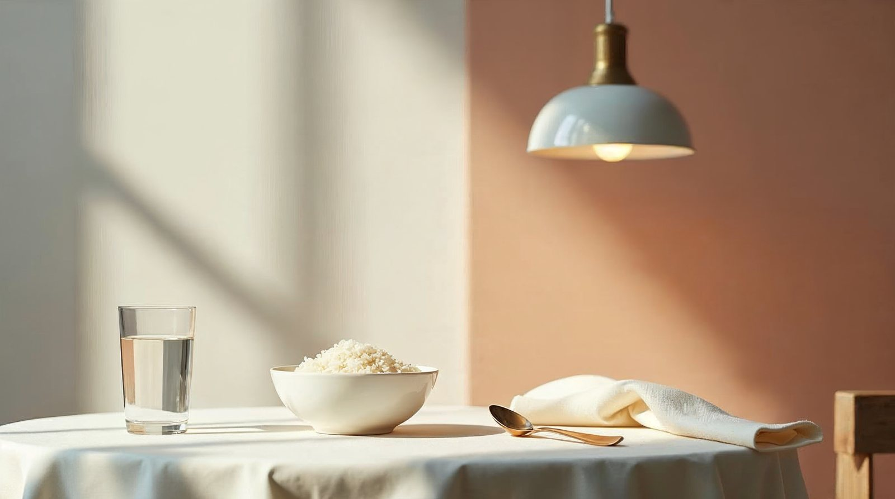
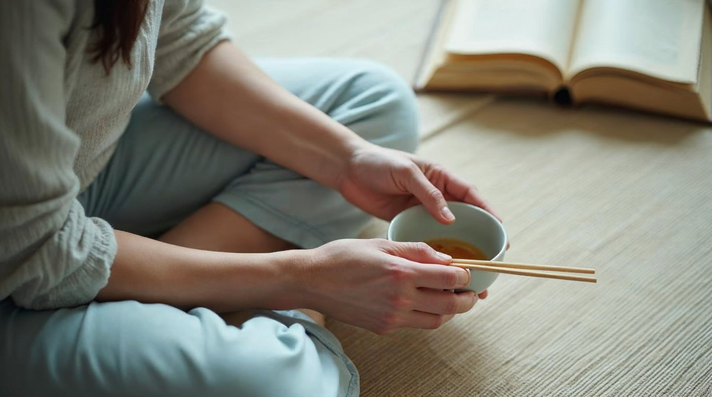
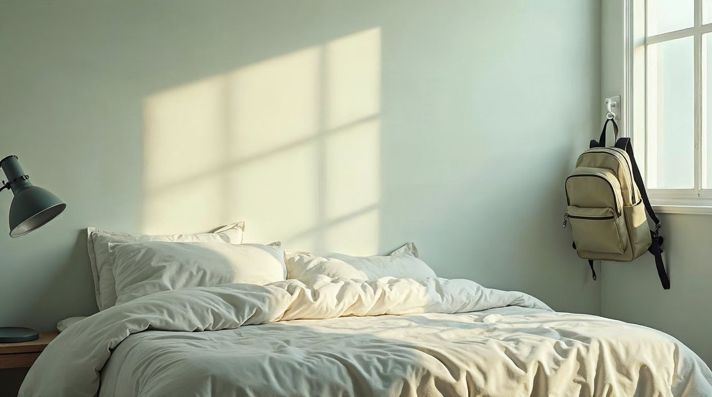
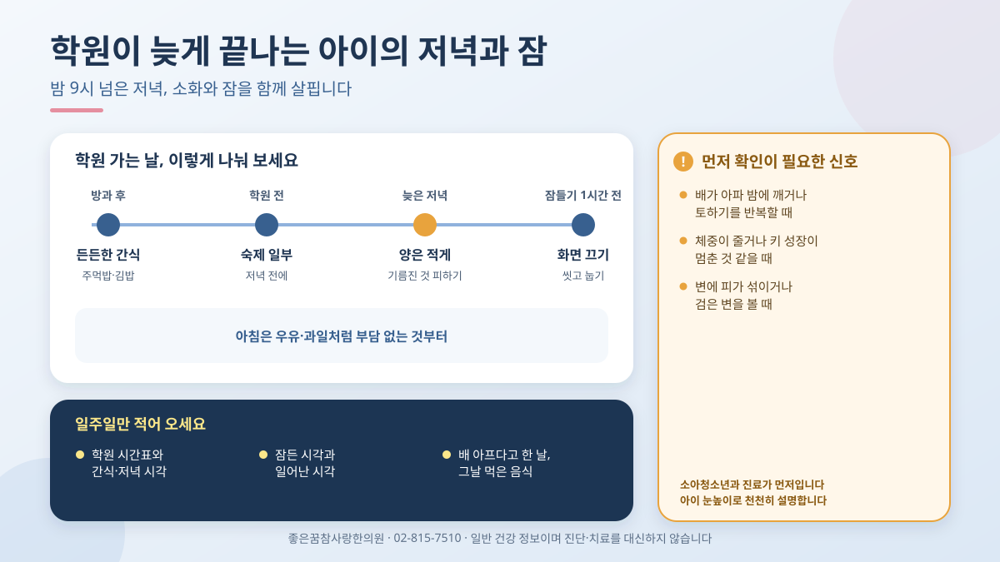

이종호 한의사 감수좋은꿈참사랑한의원 대표원장 (한의사 면허번호 19769)발행 2026-11-24 · 수정 2026-11-26
이 글의 차례
- 왜 이런 불편이 생길 수 있나요
- 왜 늦은 저녁이 다음 날 아침까지 이어질까요
- 비슷해 보여도 살필 점이 조금씩 다릅니다
- 먼저 이렇게 여쭙니다
- 상황별 예시
- 스스로 점검해 보세요
- 일상에서 먼저 해 볼 수 있는 것
- 학원 사이 간식은 이렇게 골라 보세요
- 늦은 저녁은 이렇게 차려 보세요
- 잠드는 시간은 조금씩 앞당겨 보세요
- 아침밥은 작게 시작해도 괜찮습니다
- 숙제 시간은 이렇게 나눠 보세요
- 음료와 물도 함께 살펴보세요
- 아이가 배가 아프다고 할 때 살펴볼 것
- 아이와 함께 정하는 작은 약속
- 주말은 이렇게 보내 보세요
- 한의원에서 함께 살필 수 있는 경우
- 얼마나 지켜보고 언제 상담할까요
- 이렇게 기록해 오시면 상담이 쉬워집니다
- 이런 증상은 먼저 확인이 필요합니다
학원 때문에 밤 9시가 넘어 저녁을 먹는 아이라면, 학원 가기 전에 든든한 간식으로 한 끼를 나누고 늦은 저녁은 가볍게 줄이는 것부터 해 보시길 권합니다. 늦게 먹고 숙제하다 자정 가까이 잠들면 아침 입맛이 없어 거르고, 오후에 다시 허기가 몰리는 흐름이 반복되기 쉽기 때문입니다.
아이 일정을 바로 줄이기 어려운 사정은 보호자분들이 누구보다 잘 아실 겁니다. 그래서 이 글에서는 학원을 그만두라는 이야기보다, 지금 일정 안에서 먹는 시간과 순서, 잠드는 시간을 조금씩 옮겨 보는 방법을 함께 정리해 보려 합니다.
왜 이런 불편이 생길 수 있나요
- 늦게 많이 먹고 바로 앉아 숙제하거나 누우면 소화가 덜 된 채 잠들기 쉽습니다.
- 잠드는 시간이 늦어지면 아침 입맛이 떨어지고 아침을 거르기 쉽습니다.
- 학원 사이 단 간식과 음료로 허기를 달래면 저녁 식사가 불규칙해집니다.
- 잠이 부족하면 낮에 쉽게 지치고 짜증이 늘 수 있습니다.
- 늦은 시간 화면을 보며 숙제하면 잠드는 시간이 더 밀릴 수 있습니다.
왜 늦은 저녁이 다음 날 아침까지 이어질까요
밤늦게 배부르게 먹으면 몸은 잠들 준비 대신 소화하는 일을 먼저 하게 됩니다. 속이 묵직한 채 누우면 잠드는 데 시간이 걸리고, 잠들어도 얕게 자다 뒤척이기 쉽습니다.
잠이 얕고 짧으면 아침에 일어나기 힘들고, 일어나도 속이 아직 더부룩해 아침밥이 넘어가지 않습니다. 아침을 거르고 학교에 가면 오전에는 기운이 없고, 점심과 오후 간식에서 허기가 한꺼번에 몰립니다.
허기가 몰린 채 학원에 가면 편의점에서 단 음료와 과자로 배를 채우고, 정작 저녁 무렵에는 입맛이 없다가 학원이 끝난 밤에 다시 배가 고파집니다. 이렇게 하루가 한 바퀴 돌아 다시 늦은 저녁으로 이어지는 경우가 많습니다.
비슷해 보여도 살필 점이 조금씩 다릅니다
- 저녁을 먹고 나면 배가 더부룩하고 트림이 잦은 아이는 저녁의 양과 먹는 속도, 먹고 바로 눕는 습관을 먼저 봅니다.
- 아침마다 배가 아프다며 화장실을 들락거리는 아이는 등교 전 긴장과 대변 습관도 함께 여쭙니다.
- 잠자리에 누워서도 한참 뒤척이는 아이는 저녁 식사보다 잠들기 전 화면과 숙제 시간을 더 자세히 살핍니다.
- 낮에 꾸벅꾸벅 졸고 짜증이 늘어난 아이는 전체 수면 시간이 얼마나 부족한지를 먼저 계산해 봅니다.
- 입이 짧고 늘 조금만 먹는 아이는 간식이 끼니를 대신하고 있지 않은지 하루 먹는 것을 모두 적어 봅니다.

먼저 이렇게 여쭙니다
- 학원 가기 전 간식은 무엇을, 몇 시에 먹나요?
- 저녁을 몇 시에 먹고 몇 시에 잠드나요?
- 아침을 먹고 등교하나요?
- 배가 아프거나 더부룩하다는 말을 자주 하나요?
- 잠들기 전 휴대폰이나 태블릿을 보나요?
- 대변은 며칠에 한 번, 어떤 모양으로 보나요?
- 주말에는 몇 시에 일어나나요?
상황별 예시
- 예를 들어 학교가 끝나자마자 학원 두 곳을 연달아 다니는 초등학생의 경우, 오후 4시쯤 편의점 컵라면이나 과자로 허기를 달래고 밤 9시 넘어 집에서 제대로 된 저녁을 먹게 됩니다. 학원 사이 간식을 주먹밥이나 김밥으로 바꾸고, 밤 저녁은 국과 반찬 몇 가지로 가볍게 줄여 보세요.
- 예를 들어 중학생이 되어 학원이 밤 10시에 끝나는 경우, 집에 와서 야식처럼 배달 음식을 먹고 바로 숙제를 하다 새벽 1시에 잠들기도 합니다. 저녁은 학원 가기 전에 챙기고, 귀가 후에는 우유나 과일처럼 가벼운 것으로 마무리하는 순서를 함께 정해 보세요.
- 예를 들어 맞벌이로 보호자 퇴근이 늦어 아이가 혼자 저녁을 챙겨야 하는 경우, 손이 덜 가는 인스턴트 음식으로 끼니를 때우기 쉽습니다. 전날 밤 데우기만 하면 되는 반찬과 밥을 준비해 두거나, 학원 근처에서 사 먹을 수 있는 메뉴를 아이와 미리 정해 두면 도움이 됩니다.
- 예를 들어 시험 기간에만 학원 일정이 늘어나는 경우, 그 몇 주 동안 잠이 크게 줄었다가 시험이 끝나면 주말에 몰아 자기도 합니다. 시험 기간에도 잠드는 시간만큼은 크게 밀리지 않도록 숙제 시간을 앞당겨 보세요.
스스로 점검해 보세요
- 저녁을 먹는 시각이 밤 9시를 넘는 날이 일주일에 사흘 이상이다
- 저녁을 먹고 30분 안에 눕거나 엎드려 숙제를 한다
- 아침을 거르고 등교하는 날이 많다
- 학원 사이 간식이 주로 단 음료와 과자다
- 잠들기 직전까지 휴대폰이나 태블릿을 본다
- 주말에는 평일보다 두세 시간 늦게 일어난다
- 오후가 되면 짜증이 늘고 쉽게 지친다고 한다
- 학원 앞에서 단 음료나 커피 음료를 자주 사 마신다
해당하는 항목이 많다면 간식과 저녁의 순서, 잠들기 전 습관부터 함께 바꿔 볼 신호입니다.

일상에서 먼저 해 볼 수 있는 것
- 학원 가기 전에 주먹밥이나 김밥처럼 든든한 간식으로 한 끼를 나누기
- 늦은 저녁은 양을 줄이고 기름진 음식 피하기
- 숙제는 저녁 먹기 전에 일부 끝내 두기
- 아침에는 우유나 과일처럼 부담 없는 것부터 먹이기
- 잠자리에 들기 1시간 전에는 화면 끄기
학원 사이 간식은 이렇게 골라 보세요
학원 사이 간식은 '배를 잠깐 속이는 것'보다 '작은 한 끼'라고 생각하시면 고르기가 쉽습니다. 밥이나 빵 같은 주식에 달걀, 치즈, 우유처럼 단백질이 들어간 것을 함께 먹으면 허기가 오래 갑니다.
편의점에서 사 먹어야 한다면 삼각김밥이나 김밥에 흰 우유, 바나나나 삶은 달걀을 더하는 조합을 아이와 미리 정해 두세요. 단 음료와 과자, 컵라면만으로 때우는 날이 줄어들면 늦은 저녁의 양도 자연스럽게 줄어듭니다.
간식을 먹는 시각도 중요합니다. 학원이 끝나기 직전에 먹으면 저녁이 더 밀리니, 첫 학원 가기 전이나 학원 사이 쉬는 시간처럼 이른 시간에 먹도록 해 보세요.
늦은 저녁은 이렇게 차려 보세요
밤 9시가 넘어 먹는 저녁은 밥 양을 평소의 반 정도로 줄이고, 따뜻한 국과 부드러운 반찬 위주로 차려 보세요. 튀김이나 기름진 고기, 매운 음식은 소화에 시간이 오래 걸려 잠자리까지 속을 무겁게 만들기 쉽습니다.
아이가 배고프다며 많이 먹으려 한다면, 오후 간식이 부족하지 않았는지 먼저 살펴보세요. 저녁을 억지로 줄이기보다 낮의 간식을 든든하게 바꾸는 쪽이 아이도 덜 힘들어합니다.
먹은 뒤에는 바로 눕지 말고 씻거나 가방을 정리하며 30분 정도 몸을 움직이게 해 주세요. 그동안 속이 조금 가라앉으면 잠자리에 들기가 한결 편해집니다.
잠드는 시간은 조금씩 앞당겨 보세요
잠드는 시간을 한 번에 한 시간씩 당기기는 쉽지 않습니다. 일주일에 15분씩만 앞당겨도 한 달이면 꽤 달라집니다. 아침에 일어나는 시간을 먼저 정해 두고, 그 시간에서 거꾸로 계산해 잠자리에 들 시간을 아이와 함께 정해 보세요.
잠들기 1시간 전에는 방의 불을 조금 낮추고, 휴대폰과 태블릿은 거실에서 충전하도록 약속해 보세요. 숙제가 남았다면 화면 대신 종이 교재로 마무리하게 하면 머리가 덜 깨어 있습니다.
주말에 몰아 자는 습관은 월요일 아침을 더 힘들게 만듭니다. 주말에도 평일보다 한 시간 이상 늦게 일어나지 않도록 해 보시길 권합니다.
아침밥은 작게 시작해도 괜찮습니다
늦게 먹고 늦게 잔 아이에게 아침부터 밥 한 공기를 권하면 오히려 거부감이 커집니다. 우유 한 잔, 바나나 반 개, 따뜻한 수프처럼 작은 것부터 시작해 보세요.
아침을 조금이라도 먹는 날이 늘어나면 오전에 기운이 덜 떨어지고, 오후 허기도 덜 몰립니다. 늦은 저녁이 줄어들면 아침 입맛도 조금씩 돌아오는 경우가 많습니다.
숙제 시간은 이렇게 나눠 보세요
학원에서 돌아와 숙제를 모두 하려면 잠드는 시간이 밀릴 수밖에 없습니다. 학교가 끝나고 학원에 가기 전 30분, 학원 사이 쉬는 시간처럼 낮의 짧은 틈에 숙제를 조금씩 해 두면 밤 시간이 가벼워집니다.
밤에 남은 숙제는 머리를 많이 써야 하는 것보다 외우기나 정리처럼 가벼운 것으로 남겨 두시길 권합니다. 어려운 문제를 붙잡고 있으면 머리가 깨어 잠자리에 누워서도 한참 뒤척이기 쉽습니다.
숙제가 정해진 시각까지 끝나지 않으면 그날은 거기서 멈추고 자는 것도 아이와 미리 약속해 보세요. 한두 번 숙제를 덜 하는 것보다 매일 잠이 줄어드는 쪽이 아이 몸에는 더 큰 부담이 됩니다.
음료와 물도 함께 살펴보세요
학원 앞에서 사 먹는 단 음료와 탄산음료는 순간 배를 채워 주지만 금방 다시 허기가 지게 만듭니다. 카페인이 든 커피 음료나 에너지 음료를 마시는 아이라면 밤잠이 더 늦어질 수 있습니다.
작은 물병을 가방에 넣어 다니게 하고, 단 음료는 일주일에 몇 번으로 아이와 횟수를 정해 보세요. 금지하기보다 횟수를 정하는 쪽이 아이도 받아들이기 쉽습니다.
저녁에 배가 고프다고 할 때 물이나 따뜻한 보리차를 먼저 한 잔 마시게 하면, 허기와 목마름을 구분하는 데도 도움이 됩니다.
아이가 배가 아프다고 할 때 살펴볼 것
아이가 배가 아프다고 하면 먼저 어디가 아픈지 손으로 짚어 보게 하고, 언제부터 아팠는지, 화장실에 다녀오면 편해지는지 물어봐 주세요. 배꼽 주변이 살살 아프다가 화장실에 다녀오면 가라앉는 경우가 흔합니다.
아픈 날 먹은 음식과 먹은 시각, 그날의 일정을 함께 적어 두면 패턴이 보이기 시작합니다. 시험이 있는 날이나 특정 학원에 가는 날 유독 배가 아프다면 긴장과도 관련이 있을 수 있어 진료 때 함께 이야기해 주세요.
아이와 함께 정하는 작은 약속
생활 습관은 보호자가 정해 주기보다 아이와 함께 정할 때 오래갑니다. "학원 가기 전에는 꼭 뭐 하나 먹고 가기", "밤 10시 반에는 휴대폰 거실에 두기"처럼 아이가 지킬 수 있는 약속 두세 개만 골라 보세요.
약속은 냉장고나 책상 앞에 적어 붙여 두고, 일주일 동안 지킨 날에 아이가 직접 표시하게 해 보세요. 다 지키지 못해도 괜찮습니다. 지킨 날이 조금씩 늘어나는 것을 함께 확인하는 것만으로도 아이에게는 힘이 됩니다.
보호자도 같은 시간에 휴대폰을 내려놓거나 늦은 야식을 줄이면 아이가 따라오기가 훨씬 쉽습니다. 집안 전체의 저녁 시간이 조금 앞당겨지면 아이 혼자 애쓰지 않아도 됩니다.
주말은 이렇게 보내 보세요
주말에는 평일에 부족했던 잠을 채우고 싶어지지만, 늦잠을 길게 자면 일요일 밤에 잠이 오지 않아 월요일이 더 힘들어집니다. 평일보다 한 시간 정도만 늦게 일어나고, 모자란 잠은 이른 오후에 짧게 쉬는 정도로 채워 보세요.
주말 아침은 가족이 함께 따뜻한 밥을 먹을 수 있는 좋은 시간입니다. 낮에는 밖에서 햇볕을 쬐며 뛰어노는 시간을 만들어 주면, 저녁에 몸이 자연스럽게 피곤해져 잠드는 시간을 되찾는 데 도움이 됩니다.

한의원에서 함께 살필 수 있는 경우
- 아이가 자주 배가 아프거나 입맛이 없는 경우 식사 리듬과 소화 상태를 함께 살핍니다.
- 잠드는 시간이 계속 늦어지고 아침이 힘든 경우 잠의 리듬을 함께 살핍니다.
- 쉽게 지치고 짜증이 늘어난 경우 생활 전반을 함께 살핍니다.
좋은꿈참사랑한의원에서는 아이도 모든 분처럼 맥부터 짚으며, 보호자와 함께 아이의 학원 시간표와 식사·간식, 잠드는 시각을 여쭙습니다. 혀와 배도 필요에 따라 살피고, 아이 눈높이에서 천천히 설명합니다. 필요하다고 판단될 때 침이나 한약 상담 등 아이에게 맞는 방법을 정하고, 학원 일정 안에서 바꿀 수 있는 식사 순서를 함께 계획합니다.
첫 방문 때는 아이가 낯설어하지 않도록 학교와 좋아하는 음식 이야기부터 나누고, 무엇을 왜 하는지 하나씩 설명한 뒤 진찰합니다. 배를 살필 때도 아이가 편하게 누울 수 있도록 보호자가 곁에 계셔도 괜찮습니다.
아이가 먹고 있는 약이나 영양제가 있다면 한약 상담 전에 꼭 알려 주세요. 다시 오시면 지난번 함께 정한 간식과 잠드는 시간을 얼마나 지켰는지, 아침 입맛이 어떻게 달라졌는지부터 이어서 여쭙고 다음 걸음을 정합니다.
얼마나 지켜보고 언제 상담할까요
- 간식과 저녁 순서, 잠드는 시간을 바꾼 뒤 2~3주는 식사 시각과 잠든 시각을 적으며 지켜보세요.
- 순서를 바꿔도 배가 더부룩하다는 말이 줄지 않거나, 아침을 거의 먹지 못하는 날이 이어진다면 상담을 권합니다.
- 잠드는 시간을 앞당겼는데도 낮에 졸고 짜증이 늘어난 상태가 계속된다면 잠의 질도 함께 살펴봅니다.
- 방학처럼 학원 일정이 바뀌는 시기에는 식사와 잠의 리듬도 함께 흔들리기 쉬우니, 바뀐 일정에 맞춰 간식 시각과 잠드는 시각을 다시 정해 보세요.
이렇게 기록해 오시면 상담이 쉬워집니다
- 일주일 학원 시간표
- 간식과 저녁의 시각, 메뉴
- 잠든 시각과 일어난 시각
- 배가 아프다고 한 날과 그날 먹은 음식
- 아침을 먹은 날과 먹은 양
- 대변을 본 날과 대략의 모양
- 학원 사이에 사 먹은 간식과 음료
- 주말에 일어난 시각과 낮잠 시간
이런 증상은 먼저 확인이 필요합니다
- 배가 아파 밤에 깨거나 토하기를 반복하는 경우
- 체중이 줄거나 키 성장이 눈에 띄게 멈춘 것 같은 경우
이런 신호가 있으면 한의원보다 가까운 병원이나 응급실을 먼저 찾으세요.

여쭙는 것
- 학원 가기 전 간식은 무엇을, 몇 시에 먹나요?
- 저녁을 몇 시에 먹고 몇 시에 잠드나요?
- 아침을 먹고 등교하나요?
생활에서 해 볼 것
- 학원 가기 전에 주먹밥이나 김밥처럼 든든한 간식으로 한 끼를 나누기
- 늦은 저녁은 양을 줄이고 기름진 음식 피하기
- 숙제는 저녁 먹기 전에 일부 끝내 두기
한의원에서 함께 살필 것
- 아이가 자주 배가 아프거나 입맛이 없는 경우 식사 리듬과 소화 상태를 함께 살핍니다.
- 잠드는 시간이 계속 늦어지고 아침이 힘든 경우 잠의 리듬을 함께 살핍니다.
- 쉽게 지치고 짜증이 늘어난 경우 생활 전반을 함께 살핍니다.
먼저 확인이 필요한 신호
- 배가 아파 밤에 깨거나 토하기를 반복하는 경우
- 체중이 줄거나 키 성장이 눈에 띄게 멈춘 것 같은 경우
한눈에 보는 표
| 구분 | 핵심 |
|---|---|
| 여쭙는 것 | 학원 가기 전 간식은 무엇을, 몇 시에 먹나요? 저녁을 몇 시에 먹고 몇 시에 잠드나요? |
| 생활에서 해 볼 것 | 학원 가기 전에 주먹밥이나 김밥처럼 든든한 간식으로 한 끼를 나누기 늦은 저녁은 양을 줄이고 기름진 음식 피하기 |
| 한의원에서 함께 살필 것 | 아이가 자주 배가 아프거나 입맛이 없는 경우 식사 리듬과 소화 상태를 함께 살핍니다. 잠드는 시간이 계속 늦어지고 아침이 힘든 경우 잠의 리듬을 함께 살핍니다. |
| 먼저 확인이 필요한 신호 | 배가 아파 밤에 깨거나 토하기를 반복하는 경우 체중이 줄거나 키 성장이 눈에 띄게 멈춘 것 같은 경우 |
자주 묻는 질문
학원을 줄여야 하나요?
일정을 바로 바꾸기 어렵다면 간식과 식사 시간을 조정하는 것부터 시작해 보세요.
늦게 자도 오래 자면 괜찮지 않나요?
잠드는 시간이 너무 늦으면 아침에 일어나기 힘들고 낮 집중이 떨어질 수 있어, 잠드는 시간을 조금씩 앞당기는 것을 권합니다.
아이도 한약을 먹을 수 있나요?
아이의 나이와 체중, 상태를 진찰한 뒤에 판단합니다. 먹고 있는 약이 있다면 꼭 알려 주세요.
학원 사이에 먹기 좋은 간식이 있나요?
주먹밥, 김밥, 우유, 바나나처럼 든든하면서 부담이 적은 것을 권합니다. 단 음료와 과자만으로 끼니를 대신하지 않게 해 주세요.
저녁을 아예 건너뛰고 자게 해도 되나요?
낮에 충분히 먹지 못했다면 밤에 배가 고파 잠을 설칠 수 있습니다. 양을 줄여 가볍게 먹고 자는 쪽을 권합니다.
좋은꿈참사랑한의원은 재진 때 지난번 이야기부터 이어서 여쭙니다. 진료시간과 예약은 오시는 길에서 확인하세요.
어디서 상담받을 수 있나요?
좋은꿈참사랑한의원은 서울 동작구 만양로2길 2 신성빌딩 3층·5층(서울 동작구 상도동, 7호선 상도역 3번 출구 근처)에 있습니다. 한의사 3명(이종호 대표원장, 조영기 수석진료원장, 정원영 진료원장)이 진료합니다. 진료시간은 평일 09:30~20:00(점심 13:00~14:00), 토·일·공휴일 09:30~15:00이며, 방문 전 전화로 확인을 권합니다. 예약은 네이버 예약, 카카오톡 상담, 전화 02-815-7510로 받습니다.
이 글은 일반적인 건강 정보이며 개인의 진단이나 치료를 대신하지 않습니다. 증상이 있거나 복용 중인 약이 있다면 진료를 통해 확인하세요. 치료 효과는 개인마다 다를 수 있습니다.
작성 기준: 일반적으로 알려져 있는 건강 정보를 참고해 정리했습니다(대표원장 감수). 증상 기록은 1~2주 동안 하루 1회, 비슷한 시간에 적어 오시면 지난 상태와 비교하기 쉽습니다.